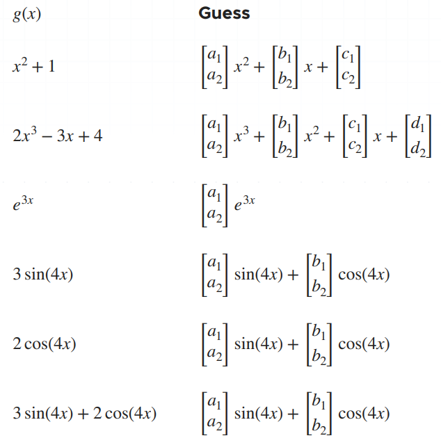

Differential Equations Pt. 4 (Systems of Equations Pt. 2)
Systems of Differential Equations Cont'd
Equal Real Eigenvalues with Multiplicity Three
An eigenvalue with multiplicity three shows up three times in the characteristic equation. We still want to consider two cases:
- The repeated eigenvalue produces multiple linearly independent eigenvectors
- The repeated eigenvalue produces only one eigenvector
As before, in the first case the solution to the system will be like the solution for distinct real eigenvalues. In the second case, we'll still use the first eigenvector $\overrightarrow{k}$ for the first solution $\overrightarrow{x}$, but we'll need special equations to find the second and third solutions.
$(a - \lambda_1 I) \overrightarrow{p_1} = \overrightarrow{k_1}$
$(a - \lambda_1 I) \overrightarrow{q_1} = \overrightarrow{p_1}$
Then the 3 solutions we'll plug into the general solution will be:
$\overrightarrow{x_1} = \overrightarrow{k_1} e^{\lambda_1 t}$
$\overrightarrow{x_2} = \overrightarrow{k_1} e^{\lambda_1 t} + \overrightarrow{p_1} e^{\lambda_1 t}$
$\overrightarrow{x_3} = \overrightarrow{k_1} \frac{t^2}{2} e^{\lambda_1 t} + \overrightarrow{p_1} te^{\lambda_1 t} + q_1 e^{\lambda_1 t}$
Example:
Find the general solution to the following system of differential equations.
$x_1'(t) = x_1$
$x_2'(t) = x_1 + 2x_2 + x_3$
$x_3'(t) = - x_1 - x_2$
We can represent this in matrix form as:
$\overrightarrow{x}' = A \overrightarrow{x}$
$ \overrightarrow{x}' = \begin{bmatrix} 1 & 0 & 0 \\ 1 & 2 & 1 \\ -1 & -1 & 0 \\ \end{bmatrix} \overrightarrow{x} $
We'll need to find the matrix $A - \lambda I$.
$ A - \lambda I = \begin{bmatrix} 1 & 0 & 0 \\ 1 & 2 & 1 \\ -1 & -1 & 0 \\ \end{bmatrix} - \lambda \begin{bmatrix} 1 & 0 & 0 \\ 0 & 1 & 0 \\ 0 & 0 & 1 \\ \end{bmatrix} $
$ A - \lambda I = \begin{bmatrix} 1 & 0 & 0 \\ 1 & 2 & 1 \\ -1 & -1 & 0 \\ \end{bmatrix} - \lambda \begin{bmatrix} \lambda & 0 & 0 \\ 0 & \lambda & 0 \\ 0 & 0 & \lambda \\ \end{bmatrix} $
$ A - \lambda I = \begin{bmatrix} 1 - \lambda & 0 & 0 \\ 1 & 2 - \lambda & 1 \\ -1 & -1 & -\lambda \\ \end{bmatrix} $
and then find its determinant, $|A - \lambda I|$
$ |A - \lambda I| = (1 - \lambda) \begin{vmatrix} 2 - \lambda & 1 \\ -1 & -\lambda \\ \end{vmatrix} - 0 \begin{vmatrix} 1 & 1 \\ -1 & -\lambda \\ \end{vmatrix} + 0 \begin{vmatrix} 1 & 2 - \lambda \\ -1 & -1 \\ \end{vmatrix} $
$|A - \lambda I| = (1 - \lambda) [(2 - \lambda)(- \lambda) - (1)(-1)] - 0[(1)(-\lambda) - (1)(-1)] + 0[(1)(-1) - (2 - \lambda)(-1)]$
$|A - \lambda I| = (1 - \lambda) (-2 \lambda + \lambda^2 + 1)$
$|A - \lambda I| = -2 \lambda + \lambda^2 + 1 + 2 \lambda^2 - \lambda^3 - \lambda$
$|A - \lambda I| = 1 - 3 \lambda + 3 \lambda^2 - \lambda^3$
Solve the characteristic equation for the eigenvalues.
$1 - 3 \lambda + 3 \lambda^2 - \lambda^3 = 0$
$\lambda^3 - 3 \lambda^2 + 3 \lambda - 1 = 0$
$(\lambda - 1)(\lambda - 1)(\lambda - 1) = 0$
For these eigenvalues, $\lambda_1 = \lambda_2 = \lambda_3 = 1$, we find:
$ A - 1I = \begin{bmatrix} 1-1 & 0 & 0 \\ 1 & 2-1 & 1 \\ -1 & -1 & -1 \\ \end{bmatrix} $
$ A - 1I = \begin{bmatrix} 0 & 0 & 0 \\ 1 & 1 & 1 \\ -1 & -1 & -1 \\ \end{bmatrix} $
Put this matrix into reduced row echelon form.
$ A - 1I = \begin{bmatrix} 0 & 0 & 0 \\ 1 & 1 & 1 \\ -1 & -1 & -1 \\ \end{bmatrix} \to \begin{bmatrix} 1 & 1 & 1 \\ -1 & -1 & -1 \\ 0 & 0 & 0 \\ \end{bmatrix} \to \begin{bmatrix} 1 & 1 & 1 \\ 0 & 0 & 0 \\ 0 & 0 & 0 \\ \end{bmatrix} $
If we turn this first row into an equation, we get:
$k_1 + k_2 + k_3 = 0$
$k_1 = -k_2 - k_3$
We'll choose $(k_2, k_3) = (-1, 0)$, which results in $k_1 = 1$.
$ \overrightarrow{k_1} = \begin{bmatrix} 1 \\ -1 \\ 0 \\ \end{bmatrix} $
and therefore:
$\overrightarrow{x_1} = k_1 e^{\lambda_1 t}$
$ \overrightarrow{x_1} = \begin{bmatrix} 1 \\ -1 \\ 0 \\ \end{bmatrix} 3^t $
But we can actually find a second linearly independent eigenvector from $k_1 = -k_2 - k_3$. If we choose $(k_2, k_3) = (0, -1)$, we get $k_1 = 1$, and find a second eigenvector from $k_1 = k_2 - k_3$. If we choose $(k_2, k_3) = (1, -1)$, we get $k_1 = 0$, and find a third eigenvector.
$ \overrightarrow{k_3} = \begin{bmatrix} 0 \\ 1 \\ -1 \\ \end{bmatrix} $
and therefore:
$\overrightarrow{x_3} = k_3 e^{\lambda_3 t}$
$ \overrightarrow{x_3} = \begin{bmatrix} 0 \\ 1 \\ -1 \\ \end{bmatrix} e^t $
The three eigenvectors, $\overrightarrow{k_1} = (1, -1, 0)$, $\overrightarrow{k_2} = (1, 0, -1)$ and $\overrightarrow{k_2} = (0, 1, -1)$ are linearly independent of each other, because there is no linear combination of any two vectors that will result in the third.
Therefore, the general solution will be:
$\overrightarrow{x} = c_1 \overrightarrow{x_1} + c_2 \overrightarrow{x_2} + c_3 \overrightarrow{x_3}$
$ \overrightarrow{x} = c_1 \begin{bmatrix} 1 \\ -1 \\ 0 \\ \end{bmatrix} e^t + c_2 \begin{bmatrix} 1 \\ 0 \\ 1 \\ \end{bmatrix} e^t + c_3 \begin{bmatrix} 0 \\ 1 \\ -1 \\ \end{bmatrix} e^t $
Complex Eigenvalues
Complex eigenvalues are eigenvalues that are complex numbers. We'll find complex eigenvalues $\lambda_1 = \alpha + \beta_i$ and $\lambda_2 = \alpha - \beta_i$ using the quadratic formula to solve the characteristic equation, and find the associated eigenvectors in the same way we did before, by solving the system of equations we get from $|A - \lambda I| = \overrightarrow{0}$. The eigenvectors $\overrightarrow{k_1}$ and $\overrightarrow{k_2}$ are conjugates, as are the eigenvalues.Example:
Solve the following system of equations.
$x_1' = 4x_1 + 5x_2$
$x_2' = -2x_1 + 6x_2$
The coefficient matrix is:
$ A = \begin{bmatrix} 4 & 5 \\ -2 & 6 \\ \end{bmatrix} $
And the matrix $A - \lambda I$ is:
$ A - \lambda I = \begin{bmatrix} 4 & 5 \\ -2 & 6 \\ \end{bmatrix} - \lambda \begin{bmatrix} 1 & 0 \\ 0 & 1 \\ \end{bmatrix} $
$ A - \lambda I = \begin{bmatrix} 4 & 5 \\ -2 & 6 \\ \end{bmatrix} - \begin{bmatrix} \lambda & 0 \\ 0 & \lambda \\ \end{bmatrix} $
$ A - \lambda I = \begin{bmatrix} 4 - \lambda & 5 \\ -2 & 6 - \lambda \\ \end{bmatrix} $
Its determinant is:
$|A - \lambda I| = (4 - \lambda)(6 - \lambda) - (5)(-2)$
$|A - \lambda I| = 24 - 4 \lambda - 6 \lambda + \lambda^2 + 10$
$|A - \lambda I| = \lambda^2 - 10 \lambda + 34$
So the characteristic equation is:
$\lambda^2 - 10 \lambda + 34 = 0$
Using the quadratic formula, the roots are:
$\lambda = \frac{ -b \pm \sqrt{b^2 - 4ac} }{ 2a }$
$\lambda = \frac{ -(-10) \pm \sqrt{(-10^2) - 4(1)(34)} }{ 2(1) }$
$\lambda = \frac{ 10 \pm \sqrt{-36} }{ 2 }$
$\lambda = \frac{10 \pm 6i}{2}$
$\lambda = 5 \pm 3i$
Then for these complex conjugate eigenvalues, $\lambda_1 = 5 + 3i$ and $\lambda_2 = 5 - 3i$, we find:
$ A - (5 + 3i)I = \begin{bmatrix} 4 - (5 + 3i) & 5 \\ -2 & 6 - (5 + 3i) \\ \end{bmatrix} $
$ A - (5 + 3i)I = \begin{bmatrix} 1 - 3i & 5 \\ -2 & 1 - 3i \\ \end{bmatrix} $
and
$ A - (5 + 3i)I = \begin{bmatrix} 4 - (5 - 3i) & 5 \\ -2 & 6 - (5 - 3i) \\ \end{bmatrix} $
$ A - (5 + 3i)I = \begin{bmatrix} -1 + 3i & 5 \\ -2 & 1 + 3i \\ \end{bmatrix} $
If we turn the matrices back into systems of equations, we get:
$(-1 - 3i)k_1 + (5)k_2 = 0$
$(-2)k_1 + (1 - 3i)k_2 = 0$
and
$(-1 + 3i)k_1 + (5)k_2 = 0$
$(-2)k_1 + (1 + 3i)k_2 = 0$
From the first equation in the first system $\lambda_1 = 5 + 3i$, we find:
$k_2 = \left( \frac{1}{5} + \frac{3}{5}i \right) k_1$
Choosing $k_1 = 5$ gives $k_2 = 1 + 3i$, which leads to the eigenvector:
$ \overrightarrow{k_1} = \begin{bmatrix} 5 \\ 1 + 3i \\ \end{bmatrix} $
and the corresponding solution vector:
$\overrightarrow{x_1} = k_1 e^{\lambda_1 t}$
$ \overrightarrow{x_1} = \begin{bmatrix} 5 \\ 1 + 3i \\ \end{bmatrix} 3^{(5 + 3i)t} $
In the same way, from the first equation in the second system for $\lambda_2 = 5 - 3i$, we find:
$k_2 = \left( \frac{1}{5} - \frac{3}{5}i \right) k_1$
Choosing $k_1 = 5$ gives $k_2 = 1 - 3i$, which leads us to the eigenvector:
$ \overrightarrow{k_2} = \begin{bmatrix} 5 \\ 1 - 3i \\ \end{bmatrix} $
and the corresponding solution vector:
$\overrightarrow{x_2} = \overrightarrow{k_2} e^{\lambda_2 t}$
$ \overrightarrow{x_2} = \begin{bmatrix} 5 \\ 1 + 3i \\ \end{bmatrix} e^{(5 - 3i)t} $
Therefore, the general solution will be:
$\overrightarrow{x} = c_1 \overrightarrow{x_1} + c_2 \overrightarrow{x_2}$
$ \overrightarrow{x} = c_1 \begin{bmatrix} 5 \\ 1 + 3i \\ \end{bmatrix} e^{(5 + 3i)t} + c_2 \begin{bmatrix} 5 \\ 1 - 3i \\ \end{bmatrix} e^{(5 - 3i)t} $
The Solution in Real Terms
We can convert the general solution from complex numbers into real numbers. When we have two complex eigenvalues, we only need to consider one eigenvector. For $lambda_1 = \alpha + \beta i$, the real vector solutions will be:
$\overrightarrow{x_1} = [ \overrightarrow{b_1} ~cos(\beta t) - \overrightarrow{b_2} ~sin(\beta t) ] e^{\alpha t}$
$\overrightarrow{x_2} = [ \overrightarrow{b_2} ~cos(\beta t) + \overrightarrow{b_1} ~sin(\beta t) ] e^{\alpha t}$
where $\overrightarrow{b_1}$ is the real part of eigenvector $\overrightarrow{k_1}$, $\overrightarrow{b} = Re(k_1)$, and where $\overrightarrow{b_2}$ is the imaginary part of the egienvector $\overrightarrow{k_1}$, $\overrightarrow{b_2} = Im(\overrightarrow{k_1})$. The complex conjugate eigenvalue $\lambda_2 = \alpha - \beta i$ gives the same values for $\alpha$ and $\beta$, and therefore the same two solutions $\overrightarrow{x_1}$ and $\overrightarrow{x_2}$.
Let's extend the last example to change the solution into real terms instead of complex terms.
Example:
Convert the following general solution into real terms.
$ \overrightarrow{x} = c_1 \begin{bmatrix} 5 \\ 1 + 3i \\ \end{bmatrix} e^{(5 + 3i)t} + c_2 \begin{bmatrix} 5 \\ 1 - 3i \\ \end{bmatrix} e^{(5 - 3i)t} $
The eigenvector $\overrightarrow{k_1}$ can be rewritten as separate real and imaginary parts.
$ \overrightarrow{k_1} = \begin{bmatrix} 5 \\ 1 + 3i \\ \end{bmatrix} $
$ \overrightarrow{k_1} = \begin{bmatrix} 5 \\ 1 \\ \end{bmatrix} + i \begin{bmatrix} 0 \\ 3 \\ \end{bmatrix} $
Therefore, the vectors $\overrightarrow{b_1} = Re(\overrightarrow{k_1})$ and $\overrightarrow{b_2} = Im(\overrightarrow{k_1})$ are:
$ \overrightarrow{b_1} = \begin{bmatrix} 5 \\ 1 \\ \end{bmatrix} $
$ \overrightarrow{b_2} = \begin{bmatrix} 0 \\ 3 \\ \end{bmatrix} $
So the first solution will be $\overrightarrow{x_1} = [\overrightarrow{b_1} ~cos(\beta t) - \overrightarrow{b_2} ~sin(\beta t)] e^{\alpha t}$.
$ \overrightarrow{x_1} = \left( \begin{bmatrix} 5 \\ 1 \\ \end{bmatrix} ~cos(3t) - \begin{bmatrix} 0 \\ 3 \\ \end{bmatrix} ~sin(3t) \right) e^{5t} $
$ \overrightarrow{x_1} = \left( \begin{bmatrix} 5 ~cos(3t) \\ cos(3t) \\ \end{bmatrix} - \begin{bmatrix} 0 \\ 3 ~sin(3t) \\ \end{bmatrix} \right) e^{5t} $
$ \overrightarrow{x_1} = \begin{bmatrix} 5 ~cos(3t) \\ cos(3t) - 3 ~sin(3t) \\ \end{bmatrix} e^{5t} $
The second solution will be:
$\overrightarrow{x_2} = [b_2 ~cos(\beta t) + \overrightarrow{b_1} ~sin(\beta t)] e^{\alpha t}$
$ \overrightarrow{x_2} = \left( \begin{bmatrix} 0 \\ 3 \\ \end{bmatrix} ~cos(3t) + \begin{bmatrix} 5 \\ 1 \\ \end{bmatrix} ~sin(3t) \right) e^{5t} $
$ \overrightarrow{x_2} = \left( \begin{bmatrix} 0 \\ 3 ~cos(3t) \\ \end{bmatrix} + \begin{bmatrix} 5 ~sin(3t) \\ sin(3t) \\ \end{bmatrix} \right) e^{5t} $
$ \overrightarrow{x_2} = \begin{bmatrix} 5 ~sin(3t) \\ 3 ~cos(3t) + sin(3t) \\ \end{bmatrix} e^{5t} $
Therefore, the general solution in real terms is given by:
$ \overrightarrow{x} = c_1 \begin{bmatrix} 5 ~cos(3t) \\ cos(3t) - 3 ~sin(3t) \\ \end{bmatrix} e^{5t} + c_2 \begin{bmatrix} 5 ~sin(3t) \\ 3 ~cos(3t) + sin(3t) \\ \end{bmatrix} e^{5t} $
Undetermined Coefficients for Nonhomogenous Systems
We introduced the equation $\overrightarrow{x}' = A \overrightarrow{x} + F$, and said a system is homogenous when $F=0$, and nonhomogenous when $F$ is non-zero, $F \neq 0$. There are two methods we can use to solve nonhomogenous systems, which are extensions of methods used earlier: 1) undetermined coefficients, and 2) variation of parameters.
As with nonhomogenous linear differential equations, the solution to a nonhomogenous system will be the sum of the complementary and particular solutions.
$\overrightarrow{x} = \overrightarrow{x_c} + \overrightarrow{x_p}$
where $\overrightarrow{x_c}$ is the general solution to the associated homogenous system, $\overrightarrow{x} = A \overrightarrow{x}$. We'll use undetermined coefficients or variation of parameters to make a guess about the particular solution, $\overrightarrow{x_p}$. Variation of parameters is a more versatile method, but undetermined coefficients can be easier.
Method of Undetermined Coefficients
The method of undetermined coefficients may work well when the entries of the vector $F$ are constants, polynomials, exponentials, sines and cosines, or a combination of these. Below is a table similar to the one we used before for nonhomogenous equations.

Example:
Use undetermined coefficients to find the general solution to the system:
$ \overrightarrow{x}' = \begin{bmatrix} 1 & 3 \\ 3 & 1 \\ \end{bmatrix} \overrightarrow{x} $
The coefficient matrix is:
$ A = \begin{bmatrix} 1 & 3 \\ 3 & 1 \\ \end{bmatrix} $
and the matrix $A - \lambda I$ is:
$ A - \lambda I = \begin{bmatrix} 1 & 3 \\ 3 & 1 \\ \end{bmatrix} - \lambda \begin{bmatrix} 1 & 0 \\ 0 & 1 \\ \end{bmatrix} $
$ A - \lambda I = \begin{bmatrix} 1 & 3 \\ 3 & 1 \\ \end{bmatrix} - \lambda \begin{bmatrix} \lambda & 0 \\ 0 & \lambda \\ \end{bmatrix} $
$ A - \lambda I = \begin{bmatrix} 1 - \lambda & 3 \\ 3 & 1 - \lambda \\ \end{bmatrix} $
Its determinant $|A - \lambda I|$ is:
$(1 - \lambda)(1 - \lambda) - (3)(3)$
$1 - 2 \lambda + \lambda^2 - 9$
$\lambda^2 - 2 \lambda - 8$
so the characteristic equation is:
$\lambda^2 - 2 \lambda - 8 = 0$
$(\lambda - 4)(\lambda + 2) = 0$
For these eigenvalue, $\lambda_1 = 4$ and $\lambda_2 = -2$, we find:
$ A - 4I = \begin{bmatrix} 1-4 & 3 \\ 3 & 1-4 \\ \end{bmatrix} $
$ A - 4I = \begin{bmatrix} -3 & 3 \\ 3 & -3 \\ \end{bmatrix} $
and
$ A - (-2)I = \begin{bmatrix} 1 - (-2) & 3 \\ 3 & 1 - (-2) \\ \end{bmatrix} $
$ A - (-2)I = \begin{bmatrix} 3 & 3 \\ 3 & 3 \\ \end{bmatrix} $
Put these two matrices into reduced row echelon form.
$ \begin{bmatrix} -3 & 3 \\ 3 & -3 \\ \end{bmatrix} \to \begin{bmatrix} 1 & -1 \\ 3 & -3 \\ \end{bmatrix} \to \begin{bmatrix} 1 & -1 \\ 0 & 0 \\ \end{bmatrix} $
and
$ \begin{bmatrix} 3 & 3 \\ 3 & 3 \\ \end{bmatrix} \to \begin{bmatrix} 1 & 1 \\ 3 & 3 \\ \end{bmatrix} \to \begin{bmatrix} 1 & 1 \\ 0 & 0 \\ \end{bmatrix} $
If we turn these back into systems of equations, we get:
$k_1 - k_2 = 0$
$k_1 = k_2$
and
$k_1 + k_2 = 0$
$k_1 = -k_2$
For the first system, we choose $(k_1, k_2) = (1, 1)$. And for the second system, $(1, -1)$.
$ \overrightarrow{k_1} = \begin{bmatrix} 1 \\ 1 \\ \end{bmatrix} $
$ \overrightarrow{k_1} = \begin{bmatrix} 1 \\ -1 \\ \end{bmatrix} $
Then the solutions to the system are:
$\overrightarrow{x_1} = \overrightarrow{k_1} e^{\lambda_1 t}$
$ \overrightarrow{x_1} = \begin{bmatrix} 1 \\ 1 \\ \end{bmatrix} e^{4t} $
and
$\overrightarrow{x_2} = \overrightarrow{k_2} e^{\lambda_2 t}$
$ \overrightarrow{x_2} = \begin{bmatrix} 1 \\ -1 \\ \end{bmatrix} e^{-2t} $
Therefore, the complementary solution to the nonhomogenous system, which is also the general solution to the associated homogenous system, will be:
$\overrightarrow{x_c} = c_1 \overrightarrow{x_1} + c_2 \overrightarrow{x_2}$
$ \overrightarrow{x_c} = c_1 \begin{bmatrix} 1 \\ 1 \\ \end{bmatrix} 3^{4t} + c_2 \begin{bmatrix} 1 \\ -1 \\ \end{bmatrix} e^{-2t} $
Now we can turn to finding the particular solution. We'll rewrite the forcing function vector as:
$ F = \begin{bmatrix} -2t^2 \\ t+5 \\ \end{bmatrix} $
$ F = \begin{bmatrix} -2 \\ 0 \\ \end{bmatrix} t^2 + \begin{bmatrix} 0 \\ 1 \\ \end{bmatrix} t^2 + \begin{bmatrix} 0 \\ 5 \\ \end{bmatrix} $
We want a particular solution in the same form, so our guess will be:
$ \overrightarrow{x_p} = \begin{bmatrix} a_1 \\ a_2 \\ \end{bmatrix} t^2 + \begin{bmatrix} b_1 \\ b_2 \\ \end{bmatrix} t + \begin{bmatrix} c_1 \\ c_2 \\ \end{bmatrix} $
$ \overrightarrow{x_p}' = \begin{bmatrix} 2a_1 \\ 2a_2 \\ \end{bmatrix} t + \begin{bmatrix} b_1 \\ b_2 \\ \end{bmatrix} $
Plugging this into the matrix equation representing the system of differential equations, $\overrightarrow{x}' = A \overrightarrow{x} + F$, we get:
$ \begin{bmatrix} 2a_1 \\ 2a_2 \\ \end{bmatrix} t + \begin{bmatrix} b_1 \\ b_2 \\ \end{bmatrix} = \begin{bmatrix} 1 & 3 \\ 3 & 1 \\ \end{bmatrix} \left[ \begin{bmatrix} a_1 \\ a_2 \\ \end{bmatrix} t^2 + \begin{bmatrix} b_1 \\ b_2 \\ \end{bmatrix} t + \begin{bmatrix} c_1 \\ c_2 \\ \end{bmatrix} \right] + \begin{bmatrix} -2 \\ 0 \\ \end{bmatrix} t^2 + \begin{bmatrix} 0 \\ 1 \\ \end{bmatrix} t + \begin{bmatrix} 0 \\ 5 \\ \end{bmatrix} $
$ \begin{bmatrix} 2a_1 t + b_1 \\ 2a_2 t + b_2 \\ \end{bmatrix} = \begin{bmatrix} 1 & 3 \\ 3 & 1 \\ \end{bmatrix} \begin{bmatrix} a_1 t^2 + b_1 t + c_1 \\ a_2 t^2 + b_2 t + c_2 \\ \end{bmatrix} + \begin{bmatrix} -2t^2 \\ t+5 \\ \end{bmatrix} $
Breaking this equation into a system of two equations gives:
$2a_1t + b_1 = (1)(a_1t^2 + b_1t + c_1) + (3)(a_2t^2 + b_2t + c_2) - 2t^2$
$2a_2t + b_2 = (3)(a_1t^2 + b_1t + c_1) + (1)(a_2t^2 + b_2t + c_2) + t + 5$
which simplifies to:
$2a_1t + b_1 = (a_1 + 3a_2 - 2)t^2 + (b_1 + 3b_2)t + (c_1 + 3c_2)$
$2a_2t + b_2 = (3a_1 + a_2)t^2 + (3b_1 + b_2 + 1)t + (3c_1 + c_2 + 5)$
These equations can each be broken into its own system.
$0 = a_1 + 3a_2 - 2$
$2a = b_1 + 3b_2$
$b_1 = c_1 + 3c_2$
and
$0 = 3a_1 + a_2$
$2a_2 = 3b_1 + b_2 + 1$
$b_2 = 3c_1 + c_2 + 5$
Solving the top two equations as a system gives $a_1 = - \frac{1}{4}$ and $a_2 = \frac{3}{4}$. Plugging these values into the middles two equations gives:
$2 \left( - \frac{1}{4} \right) = b_1 + 3b_2$
$b_1 + 3b_2 = - \frac{1}{2}$
and
$2 \left( \frac{3}{4} \right) = 3b_1 + b_2 + 1$
$3b_1 + b_2 = \frac{1}{2}$
From these, we get $b_1 = \frac{1}{4}$ and $b_2 = - \frac{1}{4}$. Plugging these values into the bottom two equations gives:
$\frac{1}{4} = c_1 + 3c2$
$c_1 + 3c_2 = \frac{1}{4}$
and
$- \frac{1}{4} = 3c_1 + c_2 + 5$
$3c_1 + c_2 = - \frac{21}{4}$
From these, we get $c_1 = -2$ and $c_2 = \frac{3}{4}$. Putting the results together gives $\overrightarrow{a} = (a_1, a_2) = (- \frac{1}{4}, \frac{3}{4})$, $\overrightarrow{b} = (b_1, b_2) = (\frac{1}{4}, - \frac{1}{4})$ and $\overrightarrow{c} = (c_1, c_2) = (-2, \frac{3}{4})$. Therefore, the particular solution becomes:
$ \overrightarrow{x_p} = \begin{bmatrix} - \frac{1}{4} \\ \frac{3}{4} \\ \end{bmatrix} t^2 + \begin{bmatrix} \frac{1}{4} \\ - \frac{1}{4} \\ \end{bmatrix} t + \begin{bmatrix} -2 \\ \frac{3}{4} \\ \end{bmatrix} $
Now we can write the particular solution as one vector.
$ \overrightarrow{x_p} = \begin{bmatrix} - \frac{1}{4}t^2 + \frac{1}{4}t - 2 \\ \frac{3}{4}t^2 - \frac{1}{4}t + \frac{3}{4} \\ \end{bmatrix} $
Summing the complementary and particular solutions gives the general solution to the nonhomogenous system of different equations.
$\overrightarrow{x} = \overrightarrow{x_c} + \overrightarrow{x_p}$
$ \overrightarrow{x} = c_1 \begin{bmatrix} 1 \\ 1 \\ \end{bmatrix} + c_2 \begin{bmatrix} 1 \\ -1 \\ \end{bmatrix} e^{-2t} + \begin{bmatrix} - \frac{1}{4}t^2 + \frac{1}{4}t^2 - 2 \\ \frac{3}{4}^2 - \frac{1}{4}t + \frac{3}{4} \\ \end{bmatrix} $
Variations of Parameters for Nonhomogenous Systems
If undetermined coefficients isn't a viable method solving a nonhomogenous system of differential equations, we can use the method of variation of parameters instead. As with undetermined coefficients, we have to start by finding the corresponding complementary solution, which is the general solution of the associated homogenous equation.
Then we'll use the complementary solution and the method of variation of parameters to find the particular solution, which will be given by:
$\overrightarrow{x_p} = \Phi(t) = \int \Phi^{-1}(t) F(t) ~dt$
The matrix $\Phi$ is made of the solution vectors from the complementary solution, and $\Phi^{-1}$, its inverse. The vector $F(t)$ is from the nonhomogenous equation $\overrightarrow{x}' = A \overrightarrow{x} + F$.
When we integrate the resulting matrix $\Phi^{-1}(t)F(t)$, we just integrate each entry in the matrix. The general solution of the nonhomogenous system will be the sum of the complementary and particular solutions.
$\overrightarrow{x} = \overrightarrow{x_c} + \overrightarrow{x_p}$
The Matrix Exponential
In addition to the method of undetermined coefficients and the method of variation of parameters, we may use the matrix exponential, $e^{At}$, as part of the following formula for the solution to a nonhomogenous system.
$\overrightarrow{x} = e^{At}C + e^{At} \int_{t_0}^t e^{-As} F(s) ~ds$
In other words, given a system of linear first order differential equations $\overrightarrow{x}' = A \overrightarrow{x} + F$, the general solution to the system is given by the integral formula above. As always, the general solution is the sum of the complementary and particular solutions.
$\overrightarrow{x_c} = e^{At}C$
$\overrightarrow{x_p} = e^{At} \int_{t_0}^t e^{-As} F(s) ~ds$
The column matrix $C$ is made of the arbitrary constants $c_1, c_2, c_3, \ldots, c_n$. And $e^{-As}$ is found by substituting t=s into $e^{At}$, and finding the inverse of that resulting matrix.
Recall the power series expansion of $e^{at}$.
$e^{at} = 1 + at + \frac{(at^2)}{2!} + \frac{(at^3)}{3!} + \ldots + \frac{(at)^k}{k!}$
$e^{at} = 1 + at + a^2 \frac{t^2}{2!} + a^3 \frac{t^3}{3!} + \ldots + a^k \frac{t^k}{k!}$
$= \sum_{k=0}^{\infty} a^k \frac{t^k}{k!}$
We can rewrite this power series expansion in matrix form, replacing $1$ with the matrix equivalent $I$, and replacing the constant $a$ with the matrix $A$.
$e^{At} = I + At + A^2 \frac{t^2}{2!} + A^3 \frac{t^3}{3!} + \ldots + A^k \frac{t^k}{k!}$
$= \sum_{k=0}^{\infty} A^k \frac{t^k}{k!}$
Example:
Use the power series formula to compute the matrix exponential of:
$A = \begin{bmatrix} 3 & 0 \\ 0 & 1 \\ \end{bmatrix} $
Let's find the first few powers of $A$, starting with $A^2$.
$ A^2 = \begin{bmatrix} 3 & 0 \\ 0 & 1 \\ \end{bmatrix} \begin{bmatrix} 3 & 0 \\ 0 & 1 \\ \end{bmatrix} = \begin{bmatrix} 3^2 & 0 \\ 0 & 1^2 \\ \end{bmatrix} $
$ A^3 = \begin{bmatrix} 3 & 0 \\ 0 & 1 \\ \end{bmatrix} \begin{bmatrix} 3 & 0 \\ 0 & 1 \\ \end{bmatrix} \begin{bmatrix} 3 & 0 \\ 0 & 1 \\ \end{bmatrix} \begin{bmatrix} 3^3 & 0 \\ 0 & 1^3 \\ \end{bmatrix} $
Higher powers of $A$ will follow this emerging pattern, so we can write:
$e^{At} = I + At + A^2 \frac{t^2}{2!} + A^3 \frac{t^3}{3!} + \ldots$
$ e^{At} = \begin{bmatrix} 1 & 0 \\ 0 & 1 \\ \end{bmatrix} + \begin{bmatrix} 3 & 0 \\ 0 & 1 \\ \end{bmatrix} t + \begin{bmatrix} 3^2 & 0 \\ 0 & 1^2 \\ \end{bmatrix} \frac{t^2}{2!} + \begin{bmatrix} 3^3 & 0 \\ 0 & 1^3 \\ \end{bmatrix} \frac{t^3}{3!} + \ldots $
$ e^{At} = \begin{bmatrix} 1 + 3t + 3^2 \frac{t^2}{2!} + 3^3 \frac{t^3}{3!} + \ldots & 0 \\ 0 & 1 + 1t + 1^2 \frac{t^2}{2!} + 1^3 \frac{t^3}{3!} + \ldots \\ \end{bmatrix} $
Notice that the entry in the upper left of the matrix is just the expansion of $e^t$.
$ e^{At} = \begin{bmatrix} 3^t & 0 \\ 0 & e^t \\ \end{bmatrix} $
Solving the Nonhomogenous System
Once we have the matrix exponential $e^{At}$, we have almost everything needed to find the general solution to the nonhomogenous system.
Example:
Find the general solution of the system:
$ \overrightarrow{x}' = \begin{bmatrix} 1 & 0 \\ 0 & 2 \\ \end{bmatrix} \overrightarrow{x} + \begin{bmatrix} 3 \\ -1 \\ \end{bmatrix} $
First, we'll find $sI - A$.
$ sI - A = s \begin{bmatrix} 1 & 0 \\ 0 & 1 \\ \end{bmatrix} - \begin{bmatrix} 1 & 0 \\ 0 & 2 \\ \end{bmatrix} $
$ sI - A = s \begin{bmatrix} s & 0 \\ 0 & s \\ \end{bmatrix} - \begin{bmatrix} 1 & 0 \\ 0 & 2 \\ \end{bmatrix} $
$ sI - A = \begin{bmatrix} s-1 & 0-0 \\ 0-0 & s-2 \\ \end{bmatrix} = \begin{bmatrix} s-1 & 0 \\ 0 & s-2 \\ \end{bmatrix} $
Then we'll find the inverse of this matrix, by changing $[sI-A | I]$ into $[I | (sI-a)^{-1}]$.
$ \begin{bmatrix} s-1 & 0 | 1 & 0 \\ 0 & s-2 | 0 & 1 \\ \end{bmatrix} \to \begin{bmatrix} 1 & 0 ~~| \frac{1}{s-1} & 0\\ 0 & s-2 | 0 & 1\\ \end{bmatrix} \to \begin{bmatrix} 1 & 0 | \frac{1}{s-1} & 0 \\ 0 & 1 | 0 & \frac{1}{s-2} \\ \end{bmatrix} $
Now we can apply the inverse Laplace transform to this inverse matrix.
$ (sI - A)^{-1} = \begin{bmatrix} \frac{1}{s-1} & 0 \\ 0 & \frac{1}{s-2} \\ \end{bmatrix} $
$ \mathcal{L}^{-1}( (sI - A)^{-1} ) = \begin{bmatrix} e^t & 0 \\ 0 & e^t \\ \end{bmatrix} $
Now that we have the matrix exponential, we can say that the complementary solution will be:
$\overrightarrow{x_c} = e^{At}C$
$ \overrightarrow{x_c} = \begin{bmatrix} e^t & 0 \\ 0 & e^{2t} \\ \end{bmatrix} \begin{bmatrix} c_1 \\ c_2 \\ \end{bmatrix} $
$ \overrightarrow{x_c} = \begin{bmatrix} c_1 e^t \\ c_2 e^t \\ \end{bmatrix} $
To find the particular solution, we'll need $e^{-As}$, which we find by making the substitution $t=s$ into $e^{At}$.
$ e^{As} = \begin{bmatrix} e^s & 0 \\ 0 & e^{2s} \\ \end{bmatrix} $
and then calculating the inverse of this resulting $e^{As}$.
$ e^{As} = \begin{bmatrix} e^s & 0 ~~~| 1 & 0 \\ 0 & e^{2s} | 0 & 1 \\ \end{bmatrix} \to \begin{bmatrix} 1 & 0 ~~~~~~| e^{-s} & 0 \\ 0 & e^{2s} | 0 & 1 \\ \end{bmatrix} \to \begin{bmatrix} 1 & 0 ~~| e^{-s} & 0 \\ 0 & 1 | 0 & e^{-2s} \\ \end{bmatrix} $
$e^{-As}$ is given by this resulting matrix:
$ e^{-As} = \begin{bmatrix} e^{-s} & 0 \\ 0 & e^{-2s} \\ \end{bmatrix} $
We'll find $F(s)$ by substituting $t=s$ into $F$, which actually require no substitution, since there are no $t$ variables in $F$.
$ F(s) = \begin{bmatrix} 3 \\ -1 \\ \end{bmatrix} $
Therefore, the particular solution will be:
$\overrightarrow{x_p} = e^{At} \int_{t_0}^t e^{-As} F(s) ~ds$
$ \overrightarrow{x_p} = \begin{bmatrix} e^t & 0 \\ 0 & e^{2t} \\ \end{bmatrix} \int_0^t \begin{bmatrix} e^{-s} & 0 \\ 0 & e^{-2s} \\ \end{bmatrix} \begin{bmatrix} 3 \\ -1 \\ \end{bmatrix} ~ds $
$ \overrightarrow{x_p} = \begin{bmatrix} e^t & 0 \\ 0 & e^{2t} \\ \end{bmatrix} \int_0^t \begin{bmatrix} 3e^{-s} \\ e^{-2s} \\ \end{bmatrix} ~ds $
Now we'll integrate and evaluate on the interval $[0, t]$.
$ \overrightarrow{x_p} = \begin{bmatrix} e^t & 0 \\ 0 & e^{2t} \\ \end{bmatrix} \int_0^t \left( \begin{bmatrix} -3e^{-t} \\ \frac{1}{2}e^{-2t} \\ \end{bmatrix} - \begin{bmatrix} -3e^{-0} \\ \frac{1}{2}e^{-2(0)} \\ \end{bmatrix} \right) $
$ \overrightarrow{x_p} = \begin{bmatrix} e^t & 0 \\ 0 & e^{2t} \\ \end{bmatrix} \left( \begin{bmatrix} -3e^{-t} \\ \frac{1}{2}e^{-2t} \\ \end{bmatrix} - \begin{bmatrix} -3 \\ \frac{1}{2} \\ \end{bmatrix} \right) $
$ \overrightarrow{x_p} = \begin{bmatrix} e^t & 0 \\ 0 & e^{2t} \\ \end{bmatrix} \begin{bmatrix} -3e^{-t} + 3 \\ \frac{1}{2}e^{2t} - \frac{1}{2} \\ \end{bmatrix} $
Finally, we can do the last matrix multiplication to get $\overrightarrow{x_p}$.
$ \overrightarrow{x_p} = \begin{bmatrix} e^t(-3e^{-t} + 3) \\ e^{2t}(\frac{1}{2}e^{-2t} - \frac{1}{2}) \\ \end{bmatrix} $
$ \overrightarrow{x_p} = \begin{bmatrix} -3 + 3e^t \\ \frac{1}{2} - \frac{1}{2}e^{2t} \\ \end{bmatrix} $
Then the general solution is the sum of the complementary and particular solutions.
$\overrightarrow{x} = \overrightarrow{x_c} + \overrightarrow{x_p}$
$ \overrightarrow{x} = \begin{bmatrix} c_1 e^t \\ c_2 e^{2t} \\ \end{bmatrix} + \begin{bmatrix} -3 + 3e^t \\ \frac{1}{2} - \frac{1}{2}e^{2t} \\ \end{bmatrix} $
$ \overrightarrow{x} = \begin{bmatrix} c_1 e^t + 3e^t - 3 \\ c_2 e^{2t} - \frac{1}{2}e^{2t} + \frac{1}{2} \\ \end{bmatrix} $
$ \overrightarrow{x} = \begin{bmatrix} c_1 + 3 \\ 0 \\ \end{bmatrix} e^t + \begin{bmatrix} 0 \\ c_2 - \frac{1}{2} \\ \end{bmatrix} e^{2t} + \begin{bmatrix} -3 \\ \frac{1}{2} \\ \end{bmatrix} $
Because $c_1$ and $c_2$ are constants, $c_1 + 3$ and $c_2 - \frac{1}{2}$ are also constants. Therefore, we can simplify the general solution to just:
$ \overrightarrow{x} = \begin{bmatrix} c_1 \\ 0 \\ \end{bmatrix} e^t + \begin{bmatrix} 0 \\ c_2 \\ \end{bmatrix} e^{2t} + \begin{bmatrix} -3 \\ \frac{1}{2} \\ \end{bmatrix} $
$ \overrightarrow{x} = c_1 \begin{bmatrix} 1 \\ 0 \\ \end{bmatrix} e^t + c_2 \begin{bmatrix} 0 \\ 1 \\ \end{bmatrix} e^{2t} + \begin{bmatrix} -3 \\ \frac{1}{2} \\ \end{bmatrix} $
Here is a link to part 5